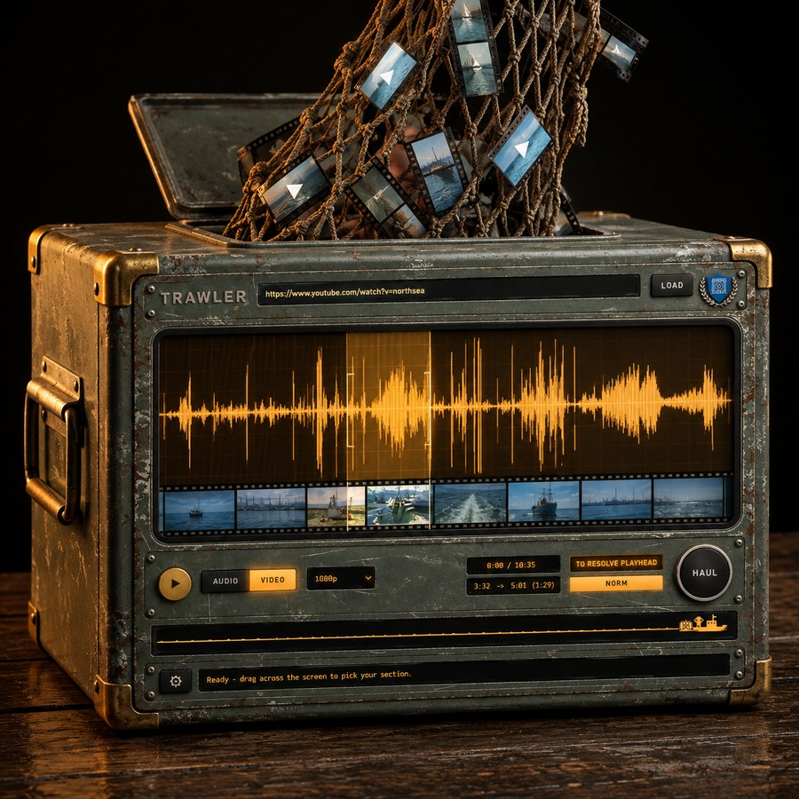
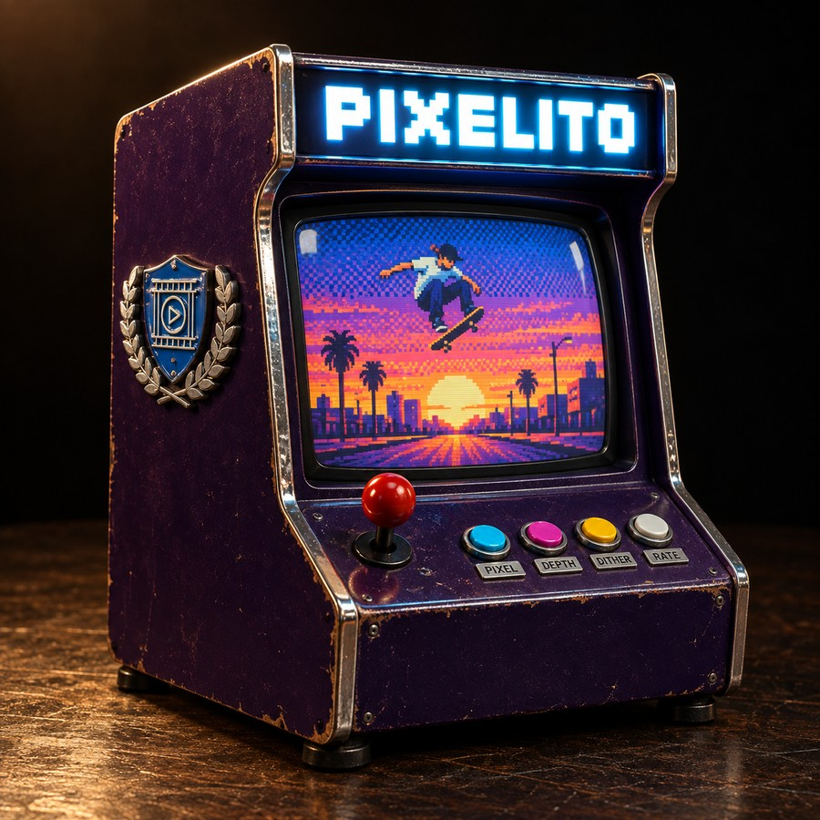
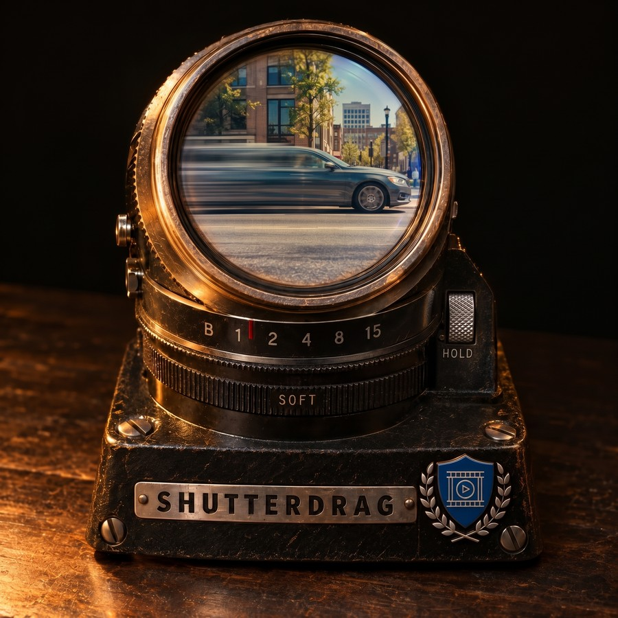
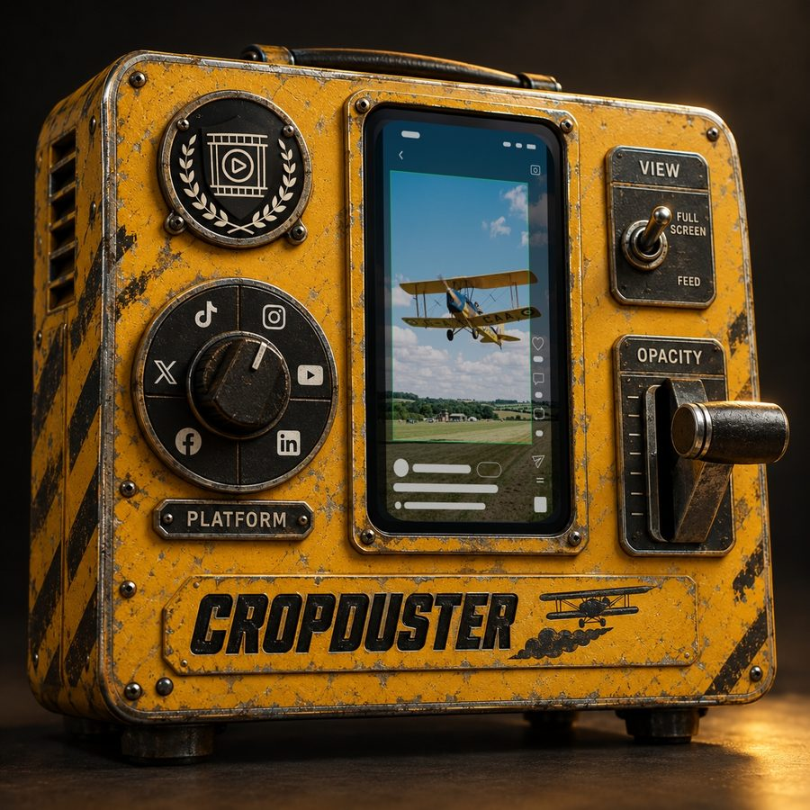

Small tools for video editors.
Tools I build for my own edits and release once they hold up in real work. Every download comes with step-by-step install instructions.
Works in

Tellybox
v1.0Filmed screen look

$19 $39 ends in

Textback
v1.6Text message animation

Free

Flipbook
v1.0Hand-drawn look

Free

Trawler
v1.0Grab just the section

Free

Paperboy
v1.2Text match cut

Free

Pixelito
v1.090s game look

Free

Shutterdrag
v1.1Slow shutter
Free

Cropduster
v1.5Social safe zones

Free
Chatterbox
v1.2Social comment cards

Free